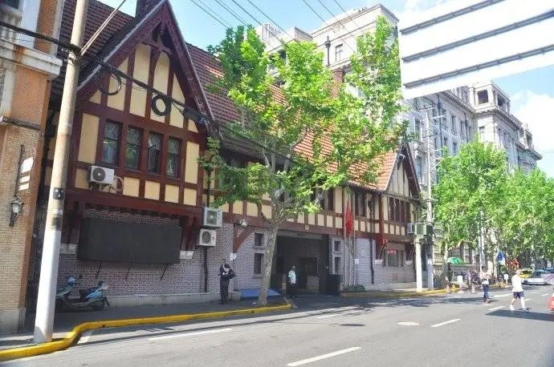
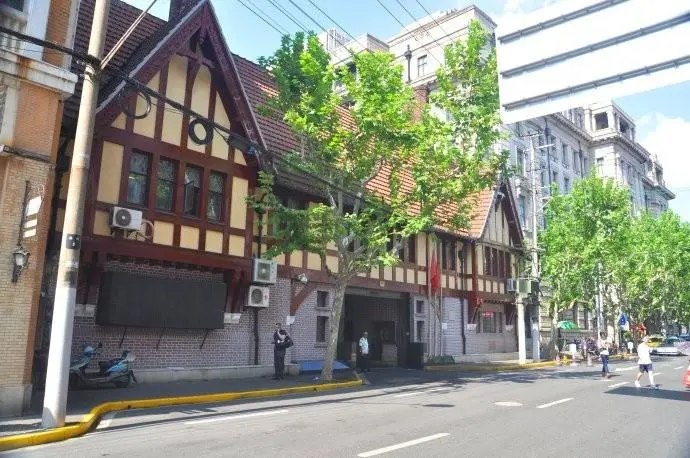
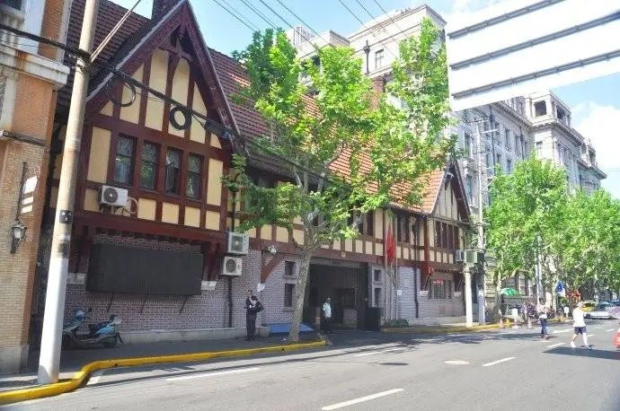
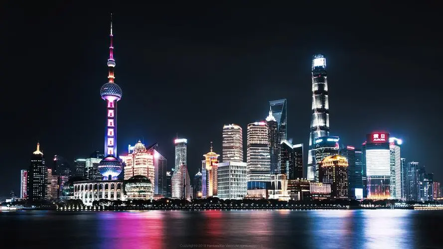
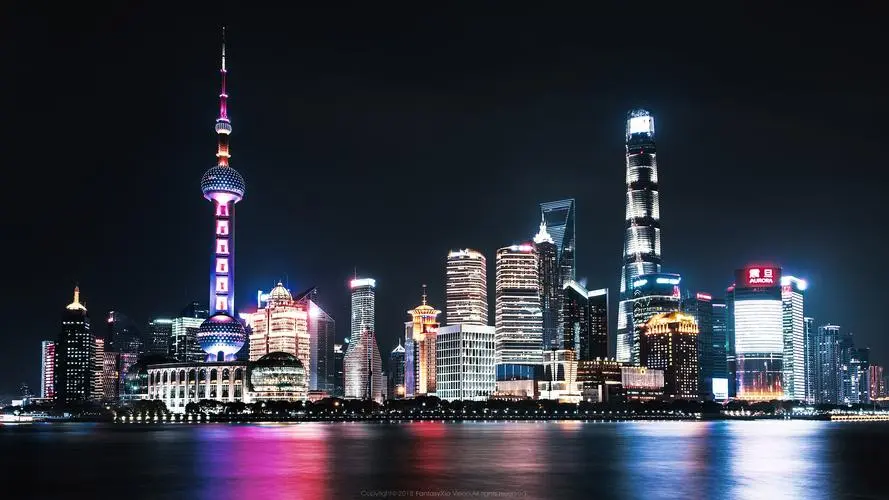
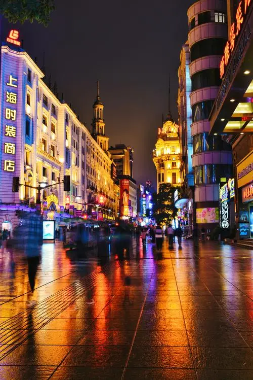
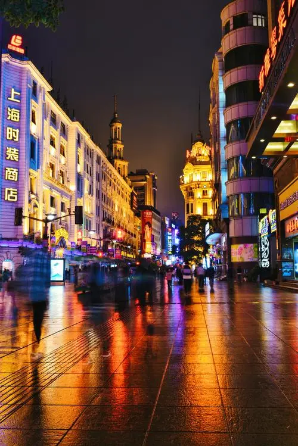
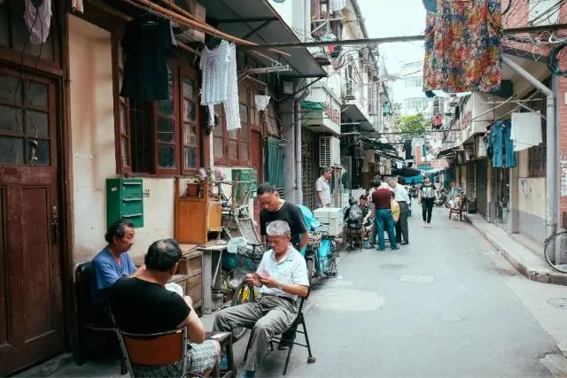
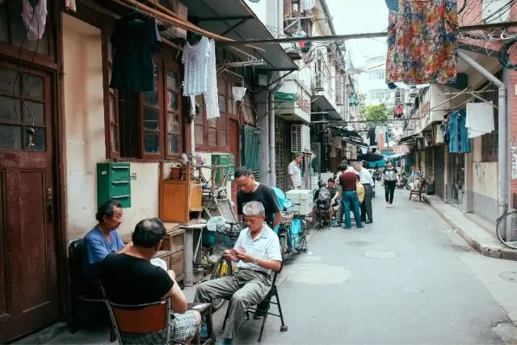

现在是：
上海在6000年前曾是一片原始村落。古代的先民生息、劳动、繁衍在这块富饶的滨海土地上。751年，上海西部置华亭县。
1291年，上海县正式建立。
清康熙以来，“海禁”慢慢解除，上海逐渐发展为有“东南都会”之称的繁荣城镇。
近代，列强的势力接踵而来，上海被迫对外开放，城市的发展打上了深深的半殖民地的烙印。
解放后，上海坚持以“海纳百川”的胸怀推动着工商业的发展、市政建设的拓展和文明的输入，使其一跃而成现代著名的经济、金融、文化中心，一个著名的国际大都市。
上海市中心的东方明珠

 

 

 

上海经过几十年的发展，已然不同于昔日的那个小渔村。这几十年里，发生了翻天覆地的变化。只建国后，上海就建造了包括但不限于以下特大型建筑：
南浦大桥（1991投入使用）
东方明珠广播电视塔（1995投入使用）
金茂大厦（1999投入使用）
上海环球金融大厦（2008投入使用）
上海世博园（2010投入使用）
上海中心大厦（2016投入使用）
上海充斥着机遇与活力。这座城市正以自己蓬勃的发展吸引着国际的目光，吸引着各个领域的人前来发展。同样，上海的发展也离不开勤劳人民的建设。只有群众的力量才能让上海变成今天这样的繁荣与多元化。
在各方完美的协调、合作下，
这座城市得以正常运行，欣欣向荣。
明天的上海